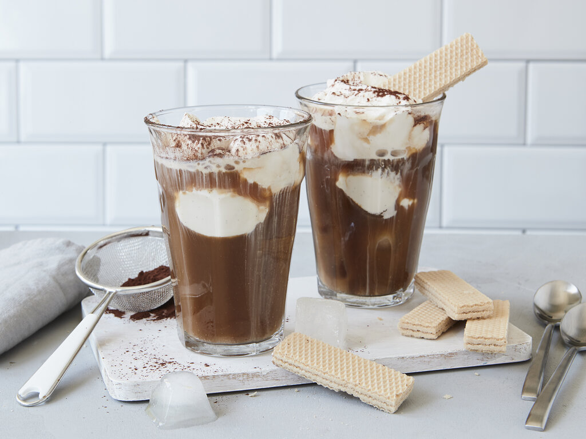

This German-style ice coffee is a combination of chilled brewed coffee and ice cream. It is usually made with an extended espresso and a scoop of vanilla ice cream, and though it is not sweetened, it can incorporate a splash of rum. Eiskaffee is usually served in a tall glass, together with a spoon and a straw.
Meal prep time : 5 minutes
Servings : 2